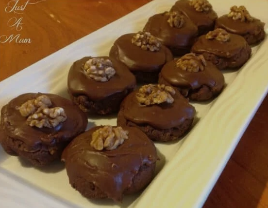

Afghan biscuits

Afghan biscuits are a classic New Zealand biscuit with cornflakes baked into them to add a crunch.
Ingredients Biscuits:
- 200 grams butter, softened or melted
- 1/2 cup of white sugar, 105 grams
- 1 1/4 cups of plain white flour, 163 grams
- 1/4 cup of cocoa, 22 grams
- 1 teaspoon vanilla, 5 mls
- 2 cups of cornflakes, 60 grams (or you can use two weetbix)
Ingredients Icing:
- 1 1/2 cups of icing sugar, 200 grams
- 1 heaped tablespoon of cocoa, 6 grams
- 1 teaspoon vanilla, 5 mls
- 1 teaspoon melted butter, 5 mls
- 1-2 tablespoons of water, 15-30 mls
- 18 walnut halves
Directions for biscuits:
- Preheat oven to 180C on bake.
- Prepare an oven tray by greasing and cover in baking paper.
- With an electric mixer combine butter and sugar for 4-5 minutes until creamy
- Add flour, cocoa and vanilla and mix well.
- Add cornflakes and lightly combine.
- Take tablespoon sized amounts and roll into balls then place them evenly on the oven tray
- Lightly flatten with your fingers or a fork.
- Bake for 12 minutes - they will be soft when they come out of the oven.
- Allow them to stand for 5 minutes before transfering them to a wire rack to cool completely.
Directions for icing:
- In a medium bowl combine icing sugar, cocoa, vanilla and melted butter.
- Slowly add the water a little at a time until the desired consistency is reached. If you add too much water just add a little icing sugar.
- Ice the biscuits and finish with a walnut half.